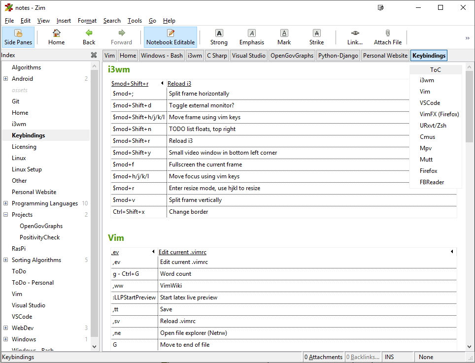
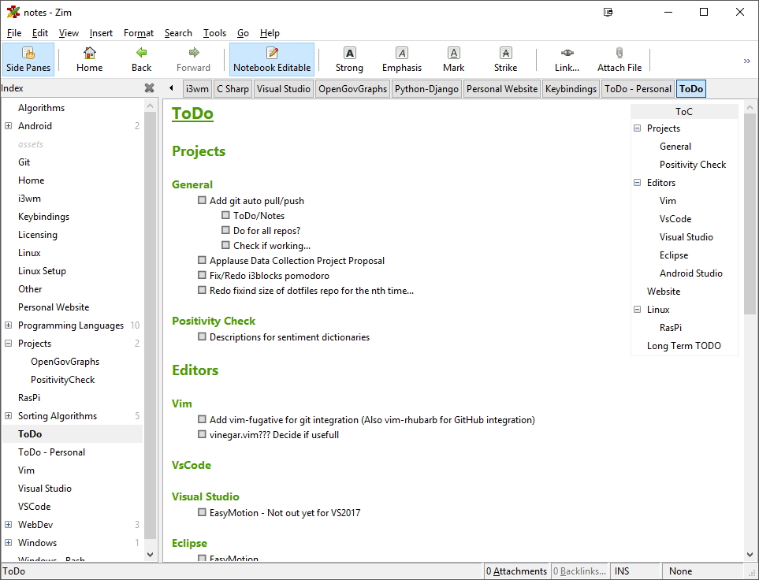

Table of Contents
Zim-Wiki
Zim-wiki is a useful tool for managing notes. Originally I had been using a random assortment of text files to take notes. This worked up to a certain point, but I found the organization to be difficult and mapping connections more frustrating than it should have been.
After suffering from a small data loss, I moved from a manual backup system of text files to using vim-wiki to take notes and git version control for saving.
This system worked for a while, but I found that where monospaced fonts worked for some notes, I generally prefered to read my notes in a more traditional gui setting. Additionally, I found that while gVim works in Windows, it is somewhat out of place with the rest of my workflow.
Here is where Zim comes in. It has a nice, simplistic interface and is quite easy to setup and use. Additionally it is cross-platform and behaves identically in linux and Windows.
The only downside that I have found is that there is currently no working mobile counterpart for Android or iOS.
Zim-wiki notes can be done in Markdown, which makes styling straightforward.
Installation is also fairly easy, with either `apt-get install zim` if on linux or from here in either portable or desktop versions.
If you would like to see my notes, here are some screenshots, and you see anything interesting, grab a copy at my github.
 